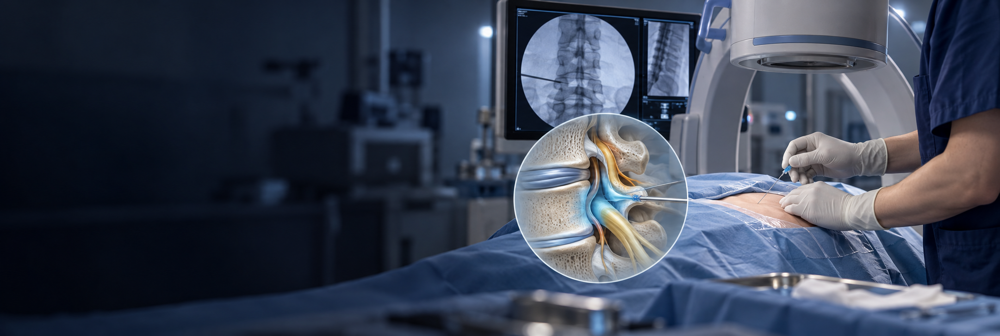

신경차단술이란?
통증과 관련된 신경 주변에 국소마취제 등의 약물을 주입하는 치료입니다. 신경의 위치에 따라 스테로이드를 함께 사용하기도 합니다.
진찰과 영상검사로 목표 부위를 정하고 주입 후 통증과 기능의 변화를 살펴 이후 치료 계획에 반영합니다.
통증과 관련된 신경 주변에 약물을 주입해
통증 완화와 원인 부위의 평가를 돕는 치료입니다.

통증과 관련된 신경 주변에 국소마취제 등의 약물을 주입하는 치료입니다. 신경의 위치에 따라 스테로이드를 함께 사용하기도 합니다.
진찰과 영상검사로 목표 부위를 정하고 주입 후 통증과 기능의 변화를 살펴 이후 치료 계획에 반영합니다.

통증의 위치와 퍼지는 양상, 감각과 근력을 함께 살펴 목표 신경을 확인합니다.
영상 유도 방법과 주입 약물을 결정하고 반응에 따라 후속 치료를 계획합니다.
통증 분포와 검사 결과, 감각·근력 변화를 함께 확인합니다.
부위에 맞는 영상 유도로 바늘의 위치를 확인하고 계획한 약물을 주입합니다.
통증 완화 정도와 감각·움직임을 살펴 이후 치료에 반영합니다.
통증의 원인과 신경 증상을 함께 평가합니다.
복용 중인 약과 알레르기, 기저질환을 확인해 시술을 계획합니다.
일시적 감각 저하·힘 빠짐은 확인 후 귀가하고, 운전·활동은 안내를 따르세요.
지속되는 근력 저하·배뇨·배변 변화·발열·통증 악화 시 신속히 진료받으세요.